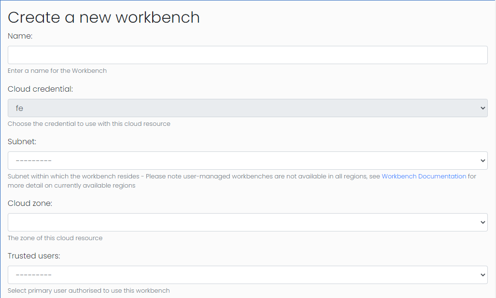
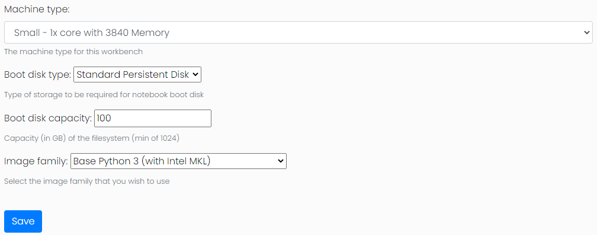
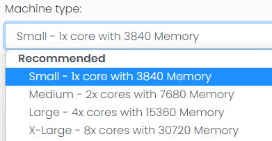

Workbench Management
The Workbench feature provides a way to create and control VertexAI Workbenches, which provide a single interactive development environment using a Jupyter Notebook perfect for pre/post processing of data. Workbenches can be located within the same VPC as other GCP resources managed by the FrontEnd.
Workbench Configuration
The first stage of configuration, after selecting the desired cloud credential, is to select the basic profile of the workbench including:
- Workbench Name
- Subnet
- Cloud Zone
- Trusted User

The subnet will define which regions the workbench can be located in. Workbenches are not available in all regions, see Workbench Documentation for more detail on currently available regions. Once a region is selected the cloud zone field will be populated with the available zones.
Trusted Users
The trusted user field will govern which user has access to the workbench. This is a 1:1 relationship as each workbench has a single instance owner that is set by the trusted user value. The workbench is then configured to run the jupyter notebook as the users OSLogin account. Access to the notebook is controlled by a proxy that requires the user to be logged into their google account to gain access.
Workbench instances have a limited number of configurations: - Machine type - Boot disk type - Boot disk capacity - Image type

Machine type & Workbench Presets
An administrator can configure any type of machine type that is available. Users with the "Normal User" class will only be able to create workbenches using the preset machine type configurations while users with the "Viewer" class will not be able to create workbenches for themselves. The HPC toolkit frontend comes with some pre-configured workbench presets: - Small - 1x core with 3840 Memory (n1-standard-1) - Medium - 2x cores with 7680 Memory (n1-standard-2) - Large - 4x cores with 15360 Memory (n1-standard-4) - X-Large - 8x cores with 30720 Memory (n1-standard-8)
Each of these have been created under the category "Recommended". Presets can be edited, deleted or new presets added via the admin panel where you can set the machine type and the category under which the user will see the preset.

Workbench Storage
The final setup of the workbench is to select any filesystems that are required to be mounted on the workbench. On this page the configuration fields will be disabled and no changes will be possible to the workbench configuration.

Within this configuration you can select from existing storage exports, the order they are mounted, and the mouth path in the filesystem. Storage will be mounted in the order according to the mount order which will be important if you are mounting storage within a sub-directory of another storage mount. Another important configuration to be aware of is that filesystems will only be mounted if the filestore or cluster is active and has an accurate IP address or hostname in the frontends database.
Workbench problems
Storage not mounted
If the expected filesystem storage has not been mounted or is not
available the most likely cause is that the database does not have a
hostname or IP address for the filestore or cluster targeted. An
admin can resolve this by accessing the instance by SSH-ing into the
GCP instance the runs the workbench and running
mount $IPADDRESS:/$TARGETDIR $MOUNTPOINT
Workbench stuck in "Creating" status
If a workbench is stuck in "Creating" status this can be resolved by
manually changing the status back to newly created in the admin
portal and then starting the creation process again. Logs for this
process can be seen at
$HPCtoolkitHome/frontend/workbenches/workbench_##/terraform/google/
where HPCtoolkitHome is normally /opt/gcluster and ## will be the id
number of the workbench in question.